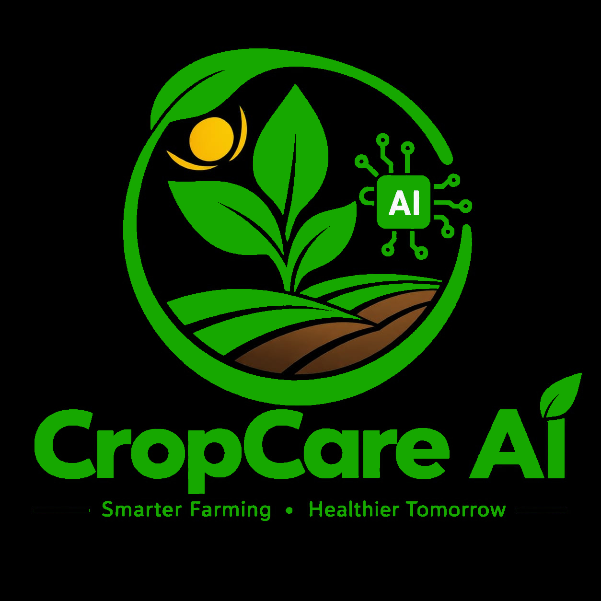
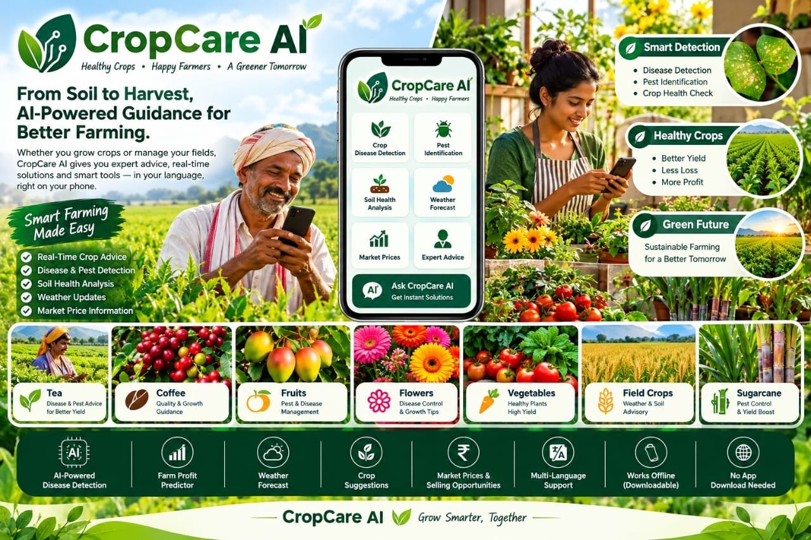
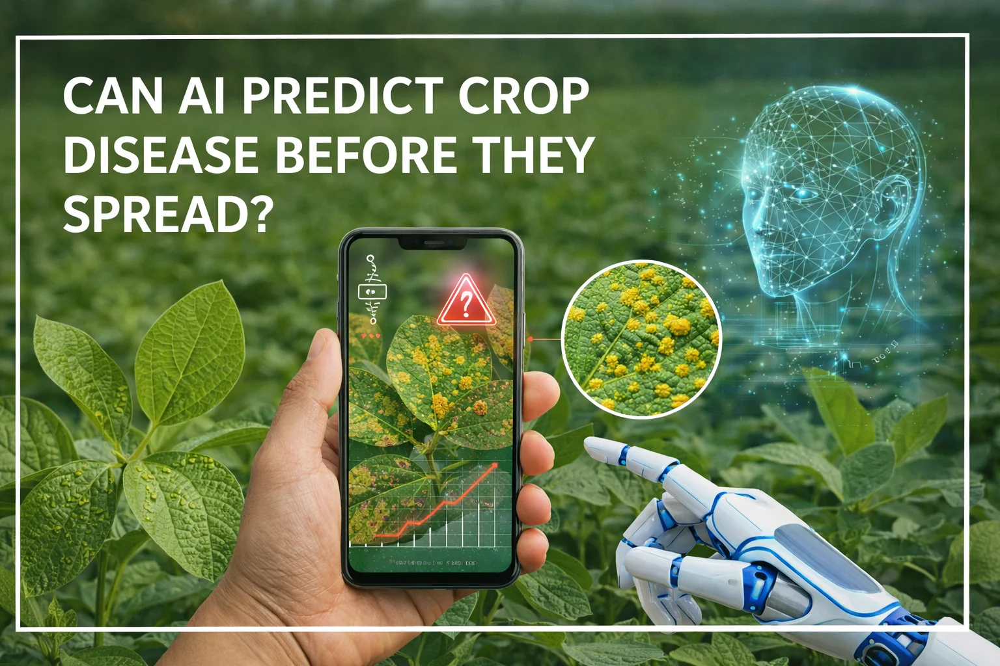
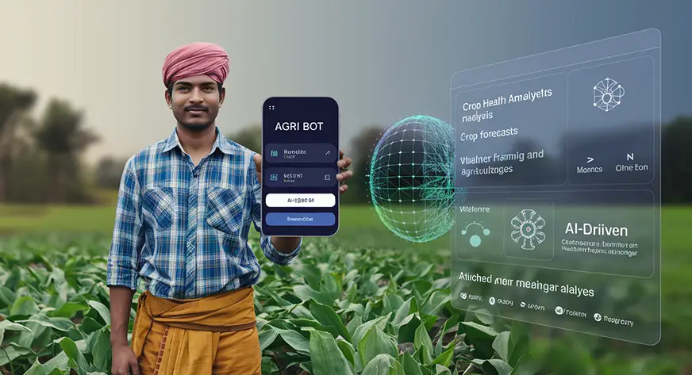

Tomato

Water the soil regularly and give the plant enough sunlight.
- Check the leaves
- Remove dry leaves

Learn how to care for your crops
Discover a smarter and more sustainable way to care for your crops with CropCare AI, your digital companion for modern agriculture. Our platform provides useful information about different crops, plant health, common crop diseases, and effective farming practices to help farmers make better agricultural decisions. From identifying potential leaf problems to understanding disease prevention, fertilizer guidance, soil management, and proper crop care, CropCare AI brings important agricultural knowledge together in one simple and user-friendly platform. It aims to make farming smarter, easier, and more informed by combining technology with agricultural knowledge. Whether you are a farmer, student, or agriculture enthusiast, CropCare AI helps you explore innovative farming solutions, improve crop awareness, reduce potential crop losses, and move towards healthier crops and a more productive agricultural future.

Learn about cropsCropCare AI is a smart agriculture project that brings useful crop-care knowledge together in one easy-to-use platform. It helps farmers and learners explore crop growing needs, recognize common signs of plant disease, and learn about responsible fertilizer use, water management, and sustainable farming practices. By combining agricultural knowledge with technology, CropCare AI aims to support informed decisions, healthier crops, and a more productive future for farming.
Water the soil regularly and give the plant enough sunlight.

Check the plant often and keep the field free from weeds.

Healthy soil and regular field checks help wheat grow well.

Maintain proper water control and monitor crop growth to improve yield.
Use data, sensors, and crop care tools to improve decisions and reduce loss.

Automation can help with field monitoring, spraying, and efficient crop care.
Take the first step towards healthier crops with CropCare AI's smart crop health analysis feature. Simply upload a clear picture of a crop leaf and explore information about possible plant health problems, common diseases, and visible symptoms. This feature is designed to help farmers and users understand changes in crop leaves and become more aware of potential diseases that may affect plant growth. It also provides useful information about crop care, disease prevention, proper watering, soil management, and general farming practices. By learning about early warning signs and understanding the importance of regular crop monitoring, farmers can take timely advice from agricultural experts and make better decisions to protect their crops. CropCare AI aims to make crop health information easier to understand and accessible through technology, helping farmers move towards healthier plants, better crop management, and more sustainable farming.
Learn MoreSmart Farming for a Better Future
CropCare AI offers numerous benefits to modern agriculture by combining technology and smart farming solutions. It helps farmers understand crop health, identify possible plant diseases, and receive useful recommendations for better crop management. With the support of Artificial Intelligence, farmers can learn about potential crop problems at an early stage and take appropriate steps to protect their plants. The platform also provides helpful information about crop care, fertilizer guidance, water management, and healthy farming practices. It aims to reduce unnecessary resource usage, save valuable time, and support better decision-making. CropCare AI encourages farmers to adopt modern agricultural techniques, improve productivity, and manage their fields more efficiently. Our goal is to make farming smarter, easier, more sustainable, and more beneficial for farmers by bringing useful agricultural information and AI-powered technology together.
Understand the importance of proper fertilizer use for healthy crops.
Fertilizer Guidance helps farmers understand which nutrients crops need for healthy growth. CropCare AI provides useful information about organic and chemical fertilizers, soil nutrients, and proper fertilizer management. Using fertilizers according to soil test results and crop requirements can improve plant growth, maintain soil fertility, and reduce waste. Farmers should follow recommended doses and expert advice for better crop production.
Connect with us to learn more about CropCare AI and its features.
CropCare AI
Taluka Ahmedpur, District Latur
Smart Agriculture & AI